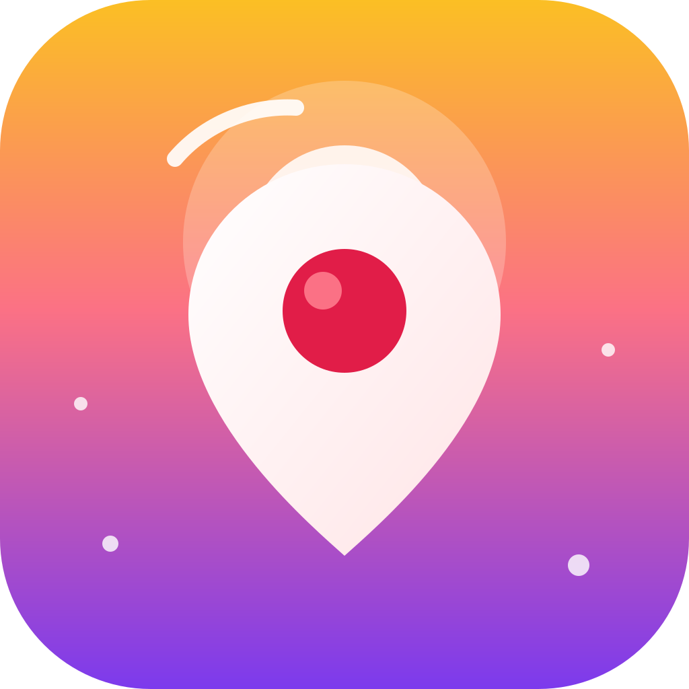

NEREYE GİTSEM?
Çevrendeki yerleri keşfet,
rotana dönüştür
rotana dönüştür
1. Gün Batımı
Mevcut uygulama ikonu ve sıcak renk geçişiyle canlı, enerjik açılış.
Uygulama açılırken 1–2 saniye görünecek üç farklı yön. Beğendiğini seç, sonra gerçek splash görseline ve Android açılışına dönüştürelim.

Mevcut uygulama ikonu ve sıcak renk geçişiyle canlı, enerjik açılış.
Lacivert gece tonu, pusula ve İstanbul silüetiyle sakin, premium bir hava.
Açık krem zemin, mercan rota ve küçük duraklarla hafif, samimi bir tasarım.